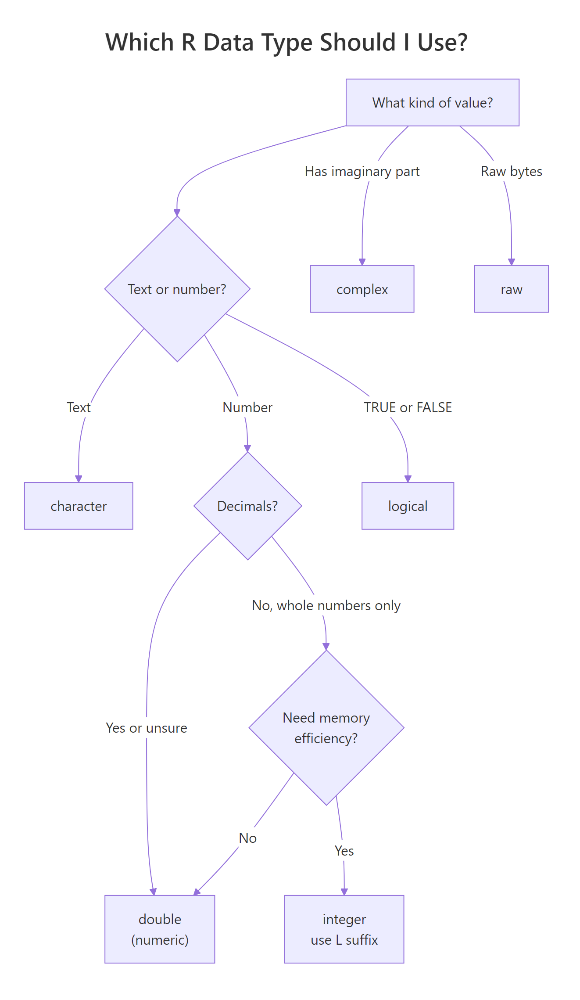
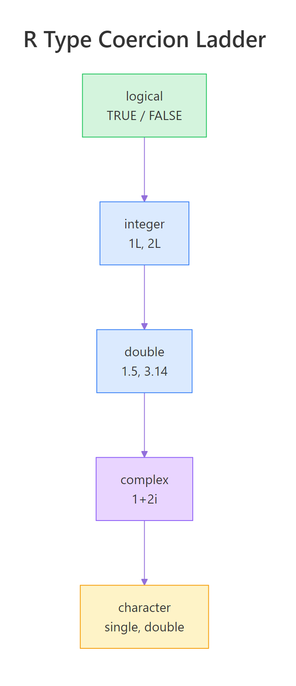
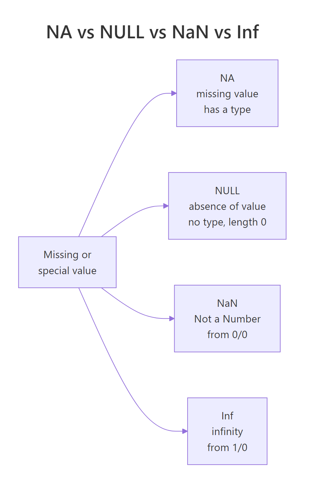

R Data Types: Which Type Is Your Variable?
R has six basic data types: numeric (double), integer, character, logical, complex, and raw. Every variable in R belongs to exactly one of these types, and knowing which type you're working with prevents most silent bugs.
Introduction
Type typeof(1) in R. It returns "double", not "numeric" — and this surprises almost everyone the first time. R has its own vocabulary for types, and mismatches between that vocabulary and your intuition cause more beginner bugs than any other topic.
This tutorial walks through all six data types, shows the three different ways to check a variable's type, explains why R silently converts between types, and covers the four special values (NA, NULL, NaN, Inf) that behave like types but aren't. Every code block is live — click Run to execute directly in your browser.
By the end, you'll never be confused again when R returns "double" instead of "numeric" or when 1 + TRUE gives 2.
What are R's six data types?
R classifies every value into one of six atomic types. These are the building blocks — every vector, list, data frame, and matrix is made of values that belong to exactly one of these types.
Let's create one value of each type and ask R what it is. We'll use typeof() to get R's internal name for the type.
Six types, six values, six typeof() answers. Notice that 3.14 produces "double" — this is R's internal name for decimal numbers. The word "numeric" is a friendlier umbrella term we'll unpack in a moment.
Here's a decision tree for picking the right type when you create a variable:

Figure 1: A quick decision guide for picking the right R data type.
Numeric (double). R's default for any number you type without a special suffix. Double-precision floating point, 64 bits, ~15 significant digits of precision.
Integer. Whole numbers only, written with an L suffix (42L, not 42). Takes half the memory of a double and interoperates better with C code. If you type 42 without the L, R stores it as a double — not an integer.
Character. Text wrapped in single or double quotes. Supports Unicode. Internally stored as length-encoded strings.
Logical. Either TRUE or FALSE (also the shortcuts T and F, though these can be overridden — prefer spelling out the full words). Used in conditions and as masks.
Complex. Numbers with an imaginary part, written with i (e.g., 2+3i). Rare outside signal processing and physics.
Raw. A sequence of bytes. Used for binary data, file I/O, and cryptography. You'll rarely encounter raw in day-to-day R work.
42, R stores it as a double. Use the L suffix (42L) to force integer storage. This surprises beginners because most languages default to integer.How do you check a variable's type?
R gives you three functions that report a variable's type, and they don't always agree. Understanding when to use which saves hours of debugging.
The three functions are class(), typeof(), and storage.mode(). They answer slightly different questions.
For an integer, all three agree. They disagree when R has attributes or S3 classes involved. Here's a case where they diverge:
For the double y, class() says "numeric" (the user-facing label) while typeof() says "double" (the storage name). For the date d, class() reports "Date" (the S3 class used for method dispatch) while typeof() reveals that underneath, a Date is just a double counting days since 1970-01-01.
Here's when to use each:
| Function | Returns | Use when you need... |
|---|---|---|
class() |
S3 class (for method dispatch) | to know how print(), summary(), etc. will behave |
typeof() |
Internal C storage type | to know how R stores the value in memory |
storage.mode() |
Similar to typeof with minor differences | rarely — mostly for historical compatibility |
You can also use the is.*() family for boolean type checks:
Notice is.integer(42) returns FALSE — because 42 without the L suffix is a double. The is.numeric() function is a broader umbrella; it returns TRUE for both doubles and integers.
How does R convert between types?
When you need a value in a different type, R gives you a family of as.*() functions to convert explicitly. This is called coercion.
The conversion rules are consistent: R tries the conversion and returns NA with a warning if it fails.
R converted each value without issues. Logical converts cleanly from numeric: 0 becomes FALSE, any non-zero becomes TRUE. Characters convert to numbers as long as they look like numbers.
When the conversion can't happen cleanly, R returns NA and warns:
as.numeric("hello") returns NA with a warning because "hello" doesn't parse as a number. as.integer(3.9) returns 3 — note that R truncates toward zero, it does not round. as.integer(-3.9) also gives -3, not -4. Use round(), floor(), or ceiling() before as.integer() if you want explicit rounding behavior.
Why does R auto-promote types?
When you combine values of different types in one vector (using c()) or in arithmetic, R automatically converts them all to a single common type. This is implicit coercion.
R follows a fixed promotion hierarchy: each type can be auto-converted up the ladder, but never down.

Figure 2: R's coercion hierarchy. Mixed values all get promoted to the rightmost type present.
Logical is the least flexible, character is the most flexible. When you mix types, R promotes everything to the highest type present.
The first line shows logical values becoming integers: TRUE became 1, FALSE became 0. The second line shows integers becoming doubles. The third line shows everything becoming character — notice 1 became "1" with quotes. The last example shows sum() counting TRUE values because logicals become integers (0 or 1) in arithmetic.
This last behavior is extremely useful: sum(some_vector > threshold) counts how many elements pass the threshold.
What are NA, NULL, NaN, and Inf?
R has four special values that represent missing, undefined, or extreme numbers. Each one is different, and confusing them is a top-10 beginner bug source.

Figure 3: The four special values in R — each represents something different.
NA (Not Available). Represents a missing value. NA has a type — R provides NA_real_, NA_integer_, NA_character_ variants for vectors where all elements need the same type.
NULL. Represents the absence of a value entirely. Length 0, no type. Used when a function returns "nothing".
NaN (Not a Number). The result of undefined numeric operations like 0/0. Always a double.
Inf and -Inf (Infinity). The result of operations like 1/0 or log(0). Arithmetic with Inf follows IEEE 754 rules.
Let's see each in action:
Each special value has a specific origin. NA inherits a type — plain NA is logical, but NA_real_ is a double. NULL has zero length, which is how R signals "no value at all". NaN and Inf are both doubles and follow IEEE 754 floating-point rules.
To check for each, use the dedicated functions — **never use ==**, because NA == anything returns NA, not TRUE or FALSE.
Notice that is.na() returns TRUE for both NA and NaN — NaN is considered a kind of missing value. But is.nan() is more specific — it only flags NaN. Use whichever matches your intent.
Common Mistakes and How to Fix Them
These four mistakes trip up almost every R beginner.
Mistake 1: Adding a character to a number
❌ Wrong:
Why it is wrong: R does NOT auto-convert characters to numbers in arithmetic. Characters can only auto-convert the other direction (numbers → characters in c()). Arithmetic throws an error.
✅ Correct:
Mistake 2: Using == to test for NA
❌ Wrong:
Why it is wrong: Comparing anything to NA with == returns NA (not TRUE or FALSE), and if() can't handle NA as a condition.
✅ Correct:
Mistake 3: Assuming class() and typeof() agree
❌ Wrong:
Why it is wrong: typeof() reveals storage, but class() determines behavior. The + method for Date class adds days, not raw doubles. Always check class() for behavioral expectations.
✅ Correct:
Mistake 4: Integer overflow silently becoming NA
❌ Wrong:
Why it is wrong: R's integer type is 32-bit, so values above ~2.1 billion overflow silently to NA. Easy to miss in long pipelines.
✅ Correct:
Practice Exercises
Use my_ prefixed variables to avoid polluting tutorial state.
Exercise 1: Check Three Types
Create three variables: a numeric, a character, and a logical. Use typeof() to print the type of each.
Click to reveal solution
Explanation: Any number without an L suffix becomes a double. Quoted text is character. TRUE/FALSE are logical.
Exercise 2: Convert Character to Integer
You have a character "42". Convert it to an integer and verify with is.integer().
Click to reveal solution
Explanation: as.integer() parses the character and returns an integer. The is.integer() check confirms the type.
Exercise 3: Count TRUEs with sum()
You have a logical vector. Count how many TRUE values it contains using sum().
Click to reveal solution
Explanation: sum() coerces logical to integer (TRUE→1, FALSE→0) before adding. This pattern — sum(some_condition) — is the standard R idiom for counting.
Exercise 4: Test for NA Correctly
Given a vector with NA values, count how many non-missing values it has. Do NOT use != or ==.
Click to reveal solution
Explanation: is.na() returns TRUE for NAs, ! flips it, and sum() counts the TRUEs. This is the safe, idiomatic R pattern.
Exercise 5: Diagnose a Mixed Vector
R coerces mixed-type input in c(). Predict the resulting type, then verify.
Click to reveal solution
Explanation: The vector has four types that get promoted up the ladder. Character is the highest type present, so EVERYTHING becomes character — including TRUE (now "TRUE"), 2L (now "2"), and 3.14 (now "3.14"). This is why accidental character values in numeric vectors are a classic bug source.
Complete Example: Detecting Coercion in a Pipeline
Here's a realistic scenario: you receive a vector that's supposed to be numeric, but coercion has silently changed its type. Let's detect and diagnose it.
The pipeline shows the standard type-checking workflow: check what you received, coerce, diagnose what failed, then analyze with NA-aware functions. typeof() revealed the data was character (quoted-looking numbers). as.numeric() converted what it could and flagged "N/A" as NA. The is.na() count reported the damage. The final mean(..., na.rm = TRUE) skipped the NA gracefully.
This pattern — check, coerce, diagnose, analyze — is the foundation of robust R data pipelines.
Summary
| Type | typeof() | class() | Example | When to use |
|---|---|---|---|---|
| double | "double" |
"numeric" |
3.14, 42 |
Any number without L |
| integer | "integer" |
"integer" |
42L, -3L |
Whole numbers, memory-critical |
| character | "character" |
"character" |
"hello" |
Text, labels, IDs |
| logical | "logical" |
"logical" |
TRUE, FALSE |
Conditions, masks |
| complex | "complex" |
"complex" |
2+3i |
Signal processing, physics |
| raw | "raw" |
"raw" |
charToRaw("A") |
Binary, crypto |
Three rules that matter most: (1) typeof() shows storage, class() shows dispatch behavior; (2) mixed vectors get promoted up the coercion ladder; (3) always use is.na() and is.null() — never ==.
FAQ
What's the difference between numeric and double?
They're almost the same in everyday use. "numeric" is R's user-facing umbrella term covering both double and integer. "double" is the specific internal storage name for floating-point numbers. class(3.14) returns "numeric"; typeof(3.14) returns "double". When people say "numeric variable", they almost always mean a double.
Why does R default to double instead of integer?
Doubles cover integer values too (exactly, up to 2^53) and handle decimals without you thinking about it. R's designers prioritized statistical computing where most work involves fractions and means. Defaulting to double means 10 / 3 gives 3.333... instead of 3, matching mathematical intuition.
When should I use the L suffix?
Three cases: (1) interfacing with C or C++ code that expects 32-bit integers, (2) memory-critical code with large vectors where halving memory matters, (3) index counters where you want to ensure integer arithmetic. For ordinary numeric work, you never need L.
Why does TRUE + TRUE return 2?
Logical values auto-promote to integers in arithmetic: TRUE becomes 1, FALSE becomes 0. This means sum(x > threshold) counts how many elements pass — an idiomatic R pattern. Once you internalize this, logical-to-integer coercion becomes a feature, not a quirk.
Is NA the same as NULL?
No. NA represents a missing value (a placeholder inside a vector, with a type). NULL represents the absence of a value entirely (length 0, no type). A vector c(1, NA, 3) has length 3 with one missing element. A vector c(1, NULL, 3) has length 2 — the NULL disappeared. Use NA for missing data, NULL for function arguments that mean "not provided".
References
- R Core Team — An Introduction to R, Chapter 2 (Simple manipulations; numbers and vectors). Link
- Wickham, H. — Advanced R, 2nd Edition, Chapter 3 (Vectors). CRC Press (2019). Link
- R Language Definition — Basic Types. Link
- R manual —
typeof()reference (stat.ethz.ch). Link - R manual —
NAreference (stat.ethz.ch). Link - R manual —
NULLreference (stat.ethz.ch). Link - Wickham, H. & Grolemund, G. — R for Data Science, 2nd Edition, Chapter 12 (Logical vectors). Link
What's Next?
- R Vectors — R's core data structure. Every data type lives inside vectors, and vectors are where coercion happens in practice.
- R Factors — a special integer-backed type for categorical data. Looks like a character, behaves like an integer internally.
- R Special Values — a deeper dive into NA, NULL, NaN, and Inf, including typed NAs and common debugging patterns.